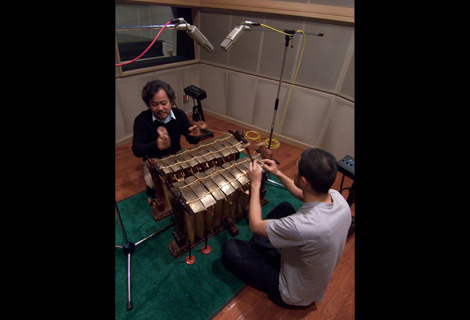
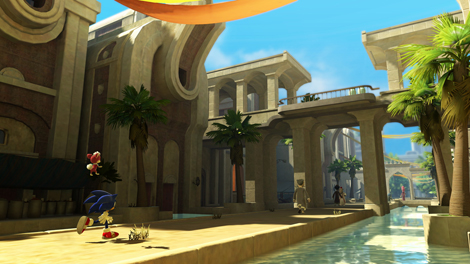
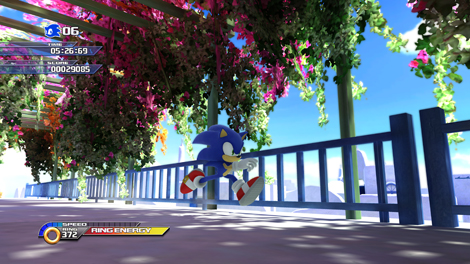
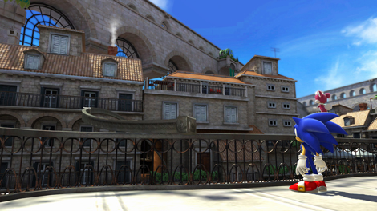

第１０回 橋本×大谷 サウンド対談 その３「ワールドミュージック」
2009年03月09日
大谷 ： 今回は、もう少しゲーム内のサウンドについて触れてみたいと思います。
橋本 ： はい、行ってみましょう。
大谷 ： プロジェクトの初期、SWAの音楽性を決める会議で、橋本さんから、「音楽でもわかりやすく地域色を表現して欲しい」というリクエストがありましたよね。
橋本 ： ありましたね。今回のゲームは「ソニック ワールドアドベンチャー」という名も示しているとおり、世界を巡って大冒険している感じを出したかったので、必須の条件でした。
大谷 ： 聴いただけで、どこの国かイメージ出来るような曲がよいとのことでした。
橋本 ： そうです。
大谷 ： そのお題を元に、具体的にどのようなアプローチで地域色を出して行くか考えて行きました。
まずは、曲の作り始める前に国ごとに特徴となる楽器を決めてしまいました。
例えば「アポトス」はフルートやボサノバのギター、「マズーリ」ではパーカッションや竹の笛、「スパゴニア」のアコーディオン、「チュンナン」の二胡、「アダバタ」のガムランなど、その国を特徴づけるための音色から決めてしまいました。
橋本 ： いろいろな民族楽器や地域固有の楽器が使われていて、非常に個性豊かな曲構成になったと思いますが、ゲーム音楽としてもなかなか面白い試みではないのでしょうか？
大谷 ： そうですね。インストゥルメンタルのゲーム音楽としても、だいぶユニークな楽器構成ですね。
橋本 ： ユニーク故に、勝手の違った部分や苦労などはありませんでしたか？
大谷 ： ありましたね。
一番かわったところでは、ガムラン（注1）です。
まず、日本できちんとした奏者の方がいるのか、ガムランに関するレコーディング事情を知るところからスタートしました。

橋本 ： なるほど、楽器がめずらしいから、演奏できる人を探すのも大変なんですね……
大谷 ： そうなんです。フルートに関しても、金属で出来たフルートではない、アフリカンフルートの音色を求めていたんですが、竹を加古して作った笛を吹いてくれる奏者の方にお願いしました。
手作りの竹の笛なので、独特の土着的なニュアンスを得る事が出来ました。
その音色は「マズーリ」の曲『Mazuri – Day / Night』、『Savannah Citadel – Day』などで聴く事ができます。
橋本 ： そういった、特殊な楽器たちの音色が聴けるのは良いですね。
大谷 ： 今作はグラフィックがかなり綺麗ですよね。その効果と相まって、国ごとに特徴的な生楽器による演奏を取り入れたことにより、村などは、その国の空気感のようなものまで表現出来たような気がします。
橋本 ： そうですね、『ソニック ワールドアドベンチャー』の基本コンセプトのひとつに「行ってみたいけど行ったことの無い場所に実際に行ったような感覚を与える空気感を出す」というのがあって、映像と音楽の両面からそれにある程度近づけたかなと思いますね。
大谷 ： 絵と音の相乗効果というものを再確認しました。
「ホロスカ」の寒く冷たい感じとか、「シャマール」の蒸し暑そうな感じなども、そういった部分まできちんと表現して、本当に旅しているように感覚を表現したいなと。
橋本 ： 「シャマール」は蒸し暑さと同時にいかがわしい独特な感じも良く出てますね（笑）

大谷 ： そうですね。そこはこだわりました。
作曲する上での参考になるような音源資料なども用意しつつ進めたのですが、「シャマール」『Shamar – Day』の作曲を担当した床井（注2）も、上手く消化してくれましたね。
何気にかなりの名曲だと思いますよ。
橋本 ： ええ、名曲ですね。
大谷 ： 異国感なんかもばっちり出てますよね。
橋本 ： ええ、出てます、出てます。
村の曲って私はすっごく好きなんですよ。どの曲も超癒されます。
大谷 ： そうですね。ゲーム中ではバックグラウンドミュージックにもなり、音楽単体として聴いてもきちんと成立する雰囲気のある曲として仕上がりました。
村の曲は床井と熊谷（注３）が中心となり作曲を担当してもらったのですが、さすがベテランですね。
橋本 ： 「地域性」というのも全開で作ってあって、場所も村なので落ち着きのある雰囲気のある曲が多いですね。
大谷 ： そうですね。アクションステージ曲との対比も考慮されています。
アクションステージのノリの良い曲がある一方で、穏やかな村の曲もある、そのレンジの広さが大きなスケールを感じさせてくれるんです。
橋本 ： 「アポトス」の曲『Apotos – Day』は朝の目覚めに良さそうです。
大谷 ： 村の曲だけのプレイリストなどを作って聴くのもなかなか良いですよ。
橋本 ： なるほど、それ良いですね。
「チュンナン」の夜の曲『Chun-nan – Night』が一番好きかな～。あれは癒されます。
大谷 ： ああ、いいですね～
橋本 ： 二胡でしたっけ？あれが効いてますね。
大谷 ： その音色ですね。生演奏ならではの表現力が、
なんともいえない良い雰囲気を醸し出してますね。
橋本 ： とにかく村の曲は全部雰囲気が良いです！大好き。
ユーザーの皆さんにも是非ゆっくり聴いてほしいです。
大谷 ： そうですね。
雰囲気という点ではグラフィックの性能が向上したことによって、その場所の空気感まで、表現できるようなレベルにまで来ているわけですが、その点で、効果音もかなり力を入れて作りました。
橋本 ： 効果音も今回はかなり「本気」ですよね。
大谷 ： そうですね。
効果音で表現したいことを実現するための環境（ツール）があったというのも大きいですが、ステージや村を駆け回っていろんな音が聴こえてきたらやっぱ楽しいじゃないですか。
橋本 ： 楽しいですね。
今回、いろんなところから実際音が聴こえてきますよね。
大谷 ： はい、効果音担当の幸崎（注４）がこだわって音を配置した結果ですね。
「アポトス」などは効果音だけでも気持ちいいんですよ。
波の音や、風車が回る音、カモメの鳴き声、風の強弱、夜になれば所々で虫が鳴いていたり……
橋本 ： 立ち止まって聴いてみたくなりますね。
ソニックは基本的にバビューンと走り抜けてしまうゲームですが、それなのにこういうところが凝ってるのが逆にちょっといいですね。
大谷 ： やはり生きた世界を駈け抜けた方が手応えが違うと思うんですよね。
その生きた世界を構築するための重要な要素として効果音があるんです。
余談ですが、最も細部すぎるだろっ！というポイントは、「ホワイトアイランド - 昼」ステージ内のブーゲンビリアです。
触れると「カサカサ」という音がします。

橋本 ： え、あそこ音が鳴るんですか！？
大谷 ： 鳴るんです！何ヶ所か。
橋本 ： 知らなかった……・（笑）
大谷 ： まぁ、ゲームの進行上、重要な音でないことに間違いありません！（笑）
これだけは断言できます。
橋本 ： ははは、ちょっとやりすぎてる感じ、私は好きですよ。
大谷 ： でも、そんなとこまで音が鳴ったら楽しいなと……。
橋本 ： 「スパゴニア」の街中とかも面白いですよね。

大谷 ： そうですね。
「スパゴニア」の街中には、効果音で遊んでいるポイントがいくつかありますので、是非、歩き廻ってみて欲しいです。
歩いているうちに気がつく人もいれば、気がつかない人もいますが、こういった小さなアイデアや遊び心を丁寧に積み重ねていくことによって、よりリッチな世界になっていきますよね。
橋本 ： そうですね、それによってその世界への没入間が増して行きますね。
サウンド面も映像面もいろいろな面で作りこんでいるので細かなところをいろいろ味わってもらえると嬉しいですね。
============================================================
※注1: インドネシアやバリ島の伝統的な音楽の総称。
※注2: 床井 健一『ソニックと秘密のリング』などを手掛けたサウンドディレクター。
※注3: 熊谷 文恵 同シリーズには『ソニックアドベンチャー』から参加、代表作『My Sweet Passion』など。
※注４: 幸崎 達哉 SWAの効果音ディレクター『Sonic The Hedgehog』2006などに参加。
日時: 2009年03月09日 19:30 | パーマリンク

 RSS
RSS